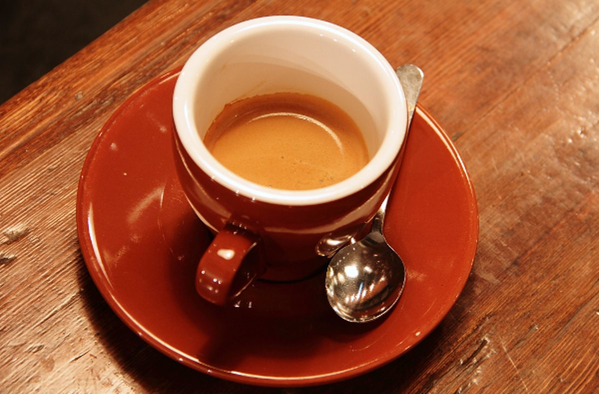
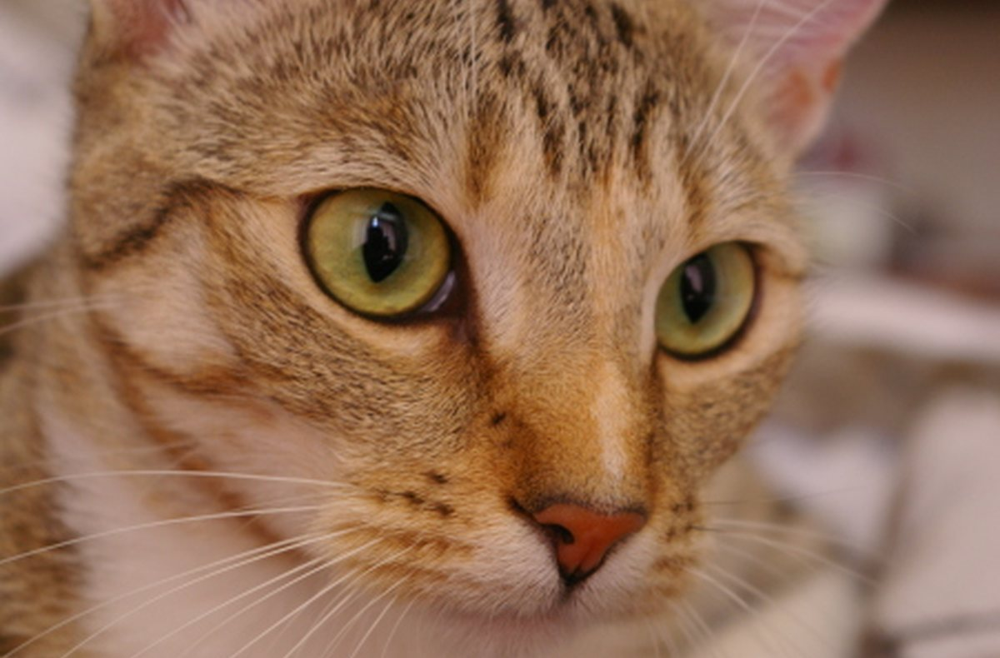

Жөнөкөй түшүндүрмө
Терминдерди мисал менен түшүндүрөбүз.
Телефон менен тартсаң да, фотоаппарат колдонсоң да, негизин туура түшүнүү маанилүү. «Кадр» — жаңы баштагандар үчүн чакан окуу долбоору.
Сабактарды көрүү →
Бул сайт фото ийримдин окуу үлгүсү катары жасалган. Биз жарыкты байкоо, туура ракурс тандоо жана кадр түзүүнү жөнөкөй тапшырмалар менен үйрөтөбүз. Баштоо үчүн кымбат техника шарт эмес.
Терминдерди мисал менен түшүндүрөбүз.
Ар бир темадан кийин чакан тапшырма болот.
Кайталап көрүүгө ыңгайлуу кыска сабактар.
Кызыккан темаңызды тандаңыз.
Фокус, экспозиция жана кадрдын өлчөмү.
Жарыкты пайдалануу жана так кадр тартуу.
Үйдөгү буюмдарды кооз жана түшүнүктүү тартуу.
Төмөнкү сүрөттөр ар башка темадагы кадрларды көрсөтөт. Алар окуу үчүн колдонулган даяр үлгүлөр, ийрим катышуучуларынын иштери эмес.

Сабак тууралуу сурооңуз болсо, төмөнкү форма аркылуу билдирүү түзүп көрүңүз.
Бул — окуу макетиндеги форма. Маалымат эч жакка жөнөтүлбөйт.
Шаар: Бишкек
Иштөө форматы: окуу үлгүсү
Э-почта: kadr-demo@example.com